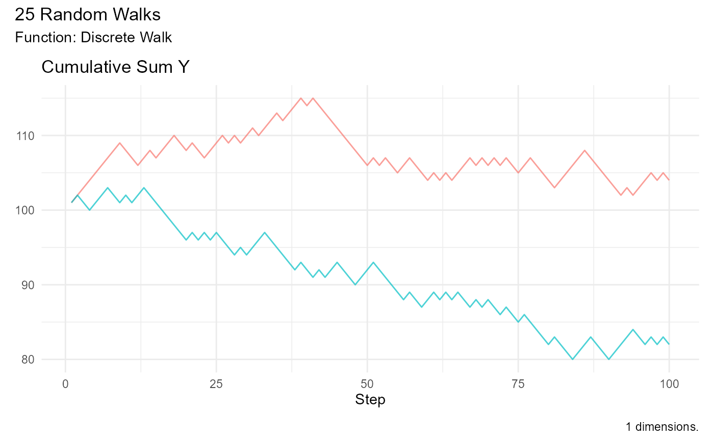

This function subsets random walks to identify the walk with the maximum or minimum value.
Arguments
- .data
A data frame containing random walks. It must have columns
walk_numberand the specified value column.- .type
A character string specifying the type of subset: "max" for maximum value, "min" for minimum value, or "both" for both maximum and minimum values.
- .value
A character string specifying the column name to use for finding extreme values. Defaults to "y".
Details
The subset_walks function takes a data frame containing random
walks and subsets it to return the walk with the maximum or minimum value
based on the specified type. It requires that the input data frame contains
columns walk_number and the specified value column.
Examples
set.seed(123)
df <- rw30()
subset_walks(df, .type = "max")
#> # A tibble: 100 × 3
#> walk_number step_number y
#> <fct> <int> <dbl>
#> 1 16 1 0
#> 2 16 2 0.730
#> 3 16 3 0.143
#> 4 16 4 0.143
#> 5 16 5 2.36
#> 6 16 6 3.33
#> 7 16 7 4.10
#> 8 16 8 2.99
#> 9 16 9 2.20
#> 10 16 10 4.48
#> # ℹ 90 more rows
subset_walks(df, .type = "min")
#> # A tibble: 100 × 3
#> walk_number step_number y
#> <fct> <int> <dbl>
#> 1 22 1 0
#> 2 22 2 -0.787
#> 3 22 3 -2.04
#> 4 22 4 -3.11
#> 5 22 5 -2.86
#> 6 22 6 -2.98
#> 7 22 7 -3.28
#> 8 22 8 -5.61
#> 9 22 9 -6.93
#> 10 22 10 -7.06
#> # ℹ 90 more rows
subset_walks(df, .type = "both")
#> # A tibble: 200 × 3
#> walk_number step_number y
#> <fct> <int> <dbl>
#> 1 16 1 0
#> 2 16 2 0.730
#> 3 16 3 0.143
#> 4 16 4 0.143
#> 5 16 5 2.36
#> 6 16 6 3.33
#> 7 16 7 4.10
#> 8 16 8 2.99
#> 9 16 9 2.20
#> 10 16 10 4.48
#> # ℹ 190 more rows
# Example with a specific value column
set.seed(123)
discrete_walk() |>
subset_walks(.type = "both", .value = "cum_sum_y") |>
visualize_walks(.pluck = 2)
